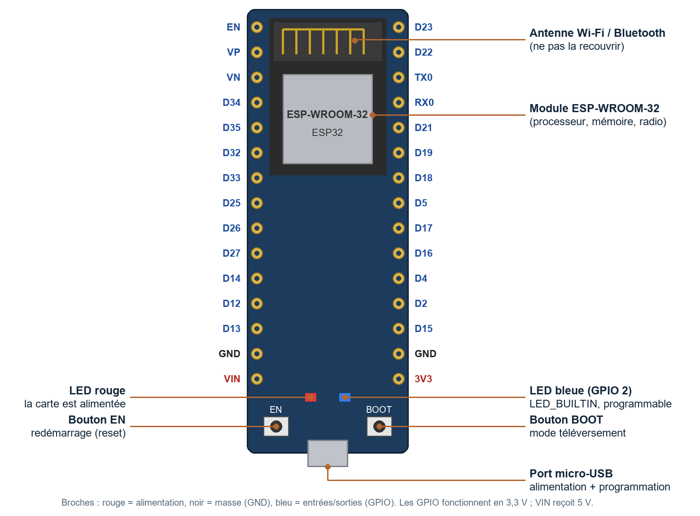
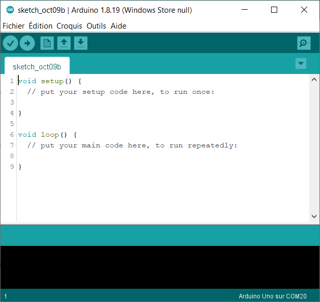
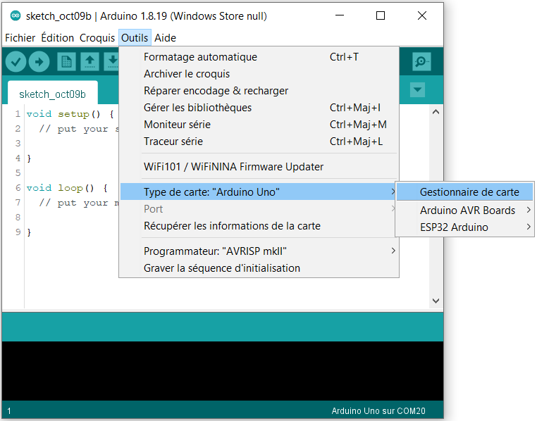
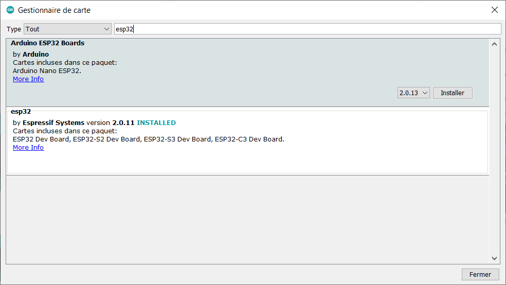
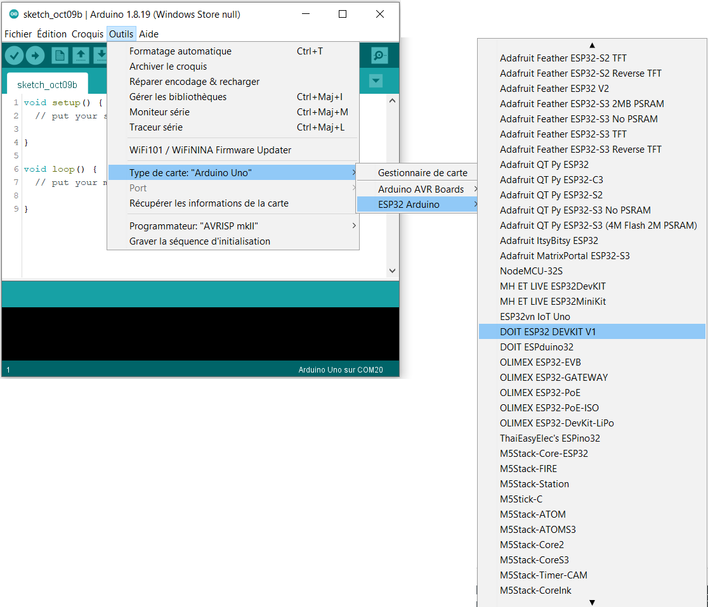
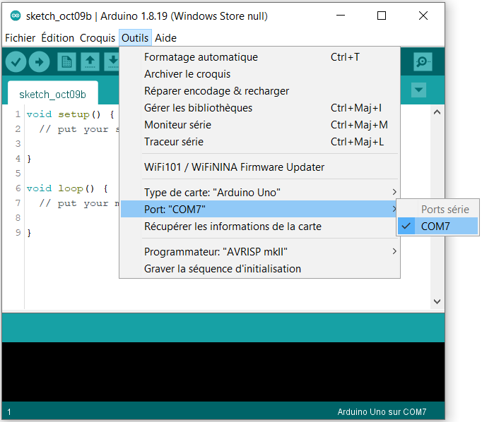
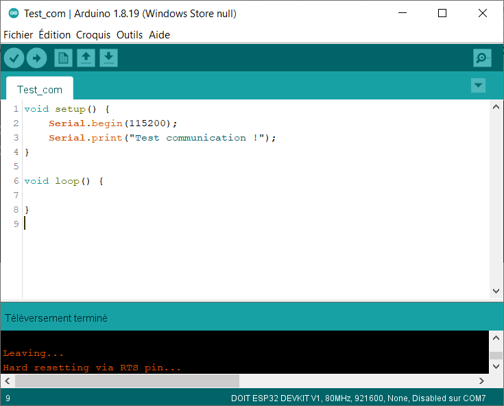
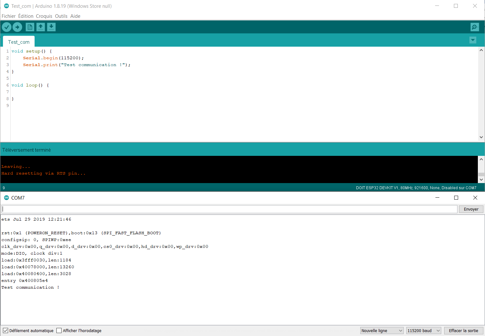

Travaux pratiques — IoT · 03
Découverte de la carte DOIT ESP32 DEVKIT V1, installation dans l'Arduino IDE, premier téléversement et bases du langage. À faire avant les autres TP.
Objectifs
for et conditions.Matériel
L’ESP32 est un microcontrôleur fabriqué par la société chinoise Espressif Systems. Un microcontrôleur est un petit ordinateur complet sur une seule puce : un processeur, de la mémoire et des entrées/sorties pour lire des capteurs et commander des actionneurs (LED, moteurs, relais…).
Sa particularité : il intègre le Wi-Fi et le Bluetooth. Il peut donc envoyer des mesures sur Internet ou être commandé à distance sans ajouter de module. C’est pour cela qu’il est très utilisé dans les objets connectés (IoT) : prises et ampoules connectées, stations météo, capteurs industriels…
Caractéristique | ESP32 (module ESP-WROOM-32) | Pour comparer : Arduino Uno |
|---|---|---|
Processeur | 2 cœurs, 32 bits, jusqu’à 240 MHz | 1 cœur, 8 bits, 16 MHz |
Mémoire vive (RAM) | 520 Ko | 2 Ko |
Mémoire programme (flash) | 4 Mo | 32 Ko |
Communication sans fil | Wi-Fi 2,4 GHz + Bluetooth (classique et BLE) | aucune |
Tension des entrées/sorties | 3,3 V | 5 V |
Entrées analogiques | convertisseur 12 bits (valeurs de 0 à 4095) | convertisseur 10 bits (0 à 1023) |
Bus de communication | UART, I2C, SPI, PWM sur presque toutes les broches | UART, I2C, SPI, 6 broches PWM |
Tableau 1 – L’ESP32 comparé à l’Arduino Uno
Attention : l’ESP32 fonctionne en 3,3 V
Ses broches d’entrée/sortie acceptent au maximum 3,3 V. Brancher un capteur qui renvoie 5 V directement sur une broche peut détruire la carte. En cas de doute, vérifiez la tension de sortie du capteur avant de le câbler.
La puce ESP32 est montée sur une carte de développement qui ajoute tout ce qu’il faut pour l’utiliser facilement : un port USB, un régulateur de tension, deux boutons, deux LED et des broches à planter dans une plaque d’essai.

Élément | Rôle |
|---|---|
Port micro-USB | Alimente la carte et sert à téléverser les programmes et à dialoguer avec l’ordinateur. |
Bouton EN | Redémarre la carte (reset) : le programme repart du début. |
Bouton BOOT | Maintenu pendant le téléversement, il force la carte à accepter un nouveau programme. |
LED rouge | Témoin d’alimentation : elle s’allume dès que la carte est branchée. |
LED bleue | Reliée à la broche GPIO 2 ( |
Broches D… | Entrées/sorties numériques (GPIO). Le numéro correspond au numéro de GPIO : D26 = GPIO 26. |
3V3, VIN, GND | 3V3 : sortie 3,3 V pour alimenter un capteur. VIN : entrée 5 V. GND : masse (0 V). |
Les broches D34, D35, VP (GPIO 36) et VN (GPIO 39) fonctionnent uniquement en entrée. Les broches TX0 et RX0 servent à la liaison série avec l’ordinateur : il vaut mieux ne rien y brancher.
L’Arduino IDE est le logiciel qui permet d’écrire un programme, de le compiler et de l’envoyer sur la carte. Un programme Arduino s’appelle un croquis (« sketch » en anglais).

À l’installation, l’Arduino IDE ne sait programmer que les cartes Arduino. Il faut d’abord lui ajouter les outils propres à l’ESP32.
1. Ouvrir Fichier → Préférences. Dans le champ URL de gestionnaire de cartes supplémentaires, coller l’adresse suivante, puis valider avec OK :
https://espressif.github.io/arduino-esp32/package_esp32_index.json2. Ouvrir le gestionnaire de cartes : Outils → Type de carte → Gestionnaire de carte.

3. Taper esp32 dans la barre de recherche. Si le paquet esp32 by Espressif Systems n’affiche pas la mention INSTALLED, cliquer sur Installer et patienter (le téléchargement peut prendre quelques minutes).

Les cartes ESP32 apparaissent maintenant dans Outils → Type de carte → ESP32 Arduino. Sélectionner DOIT ESP32 DEVKIT V1.

Arduino IDE 2
Les captures ont été faites avec l’Arduino IDE 1.8. Dans la version 2, les menus portent les mêmes noms ; le gestionnaire de carte s’ouvre aussi avec l’icône de carte dans la barre de gauche.
Avant d’écrire un programme, il faut vérifier que l’ordinateur dialogue avec la carte. Brancher la carte avec le câble USB, puis ouvrir Outils → Port : un port COM apparaît (ici COM7 ; le numéro change d’un ordinateur à l’autre). Le sélectionner.

Aucun port COM n’apparaît ?
Ce premier programme envoie un message à l’ordinateur par la liaison série (le câble USB). Recopier le code suivant dans un nouveau croquis :
void setup() {
Serial.begin(115200);
Serial.print("Test communication !");
}
void loop() {
}Figure 7 – Envoi d’un message test par la liaison série
Cliquer sur le bouton Téléverser (la flèche vers la droite). L’Arduino IDE compile le programme, puis l’envoie sur la carte. La loupe, en haut à droite, ouvre le moniteur série.

Pendant le téléversement, la zone noire en bas de la fenêtre affiche des informations comme celles-ci :
Le croquis utilise 260145 octets (19%) de l'espace de stockage de programmes.
Le maximum est de 1310720 octets.
Les variables globales utilisent 21344 octets (6%) de mémoire dynamique, ce qui
laisse 306336 octets pour les variables locales. Le maximum est de 327680 octets.
esptool.py v4.5.1
Serial port COM7
Connecting...........Le téléversement échoue ?
Si un message d’erreur apparaît pendant Connecting…, relancer le téléversement et maintenir le bouton BOOT enfoncé dès que « Connecting… » s’affiche. Le relâcher quand le pourcentage d’écriture commence à défiler.
Dans le moniteur série, on règle la vitesse de transmission, en bauds. Elle doit être la même que celle indiquée dans Serial.begin(). Avec une carte Arduino, on utilise souvent 9600 bauds ; avec l’ESP32, on utilise 115200 bauds, car c’est la vitesse à laquelle la carte envoie ses messages de démarrage.
Dès que le téléversement est terminé, l’ESP32 exécute le programme. Le message « Test communication ! » est donc envoyé tout de suite, souvent avant l’ouverture du moniteur série. Contrairement à l’Arduino Uno, l’ESP32 ne redémarre pas quand on ouvre le moniteur série. Pour voir le message, il faut :

Les lignes qui précèdent le message sont les informations de démarrage de l’ESP32. Elles ne s’affichent correctement qu’à 115200 bauds : à une autre vitesse, on voit des caractères illisibles.
Les programmes Arduino sont écrits en C++, un langage issu du C. On y retrouve des fonctions (des blocs d’instructions qui portent un nom) et des bibliothèques (des fonctions déjà écrites, comme Serial, que l’on peut utiliser dans son programme). Chaque instruction se termine par un point-virgule ;.
Tout programme contient au minimum deux fonctions :
// fonction d'initialisation : exécutée une seule fois, au démarrage de la carte
void setup() {
// contenu de l'initialisation
}
// fonction principale : elle se répète à l'infini
void loop() {
// contenu de votre programme
}Figure 10 – Le code minimal d’un programme Arduino
Tout ce qui suit // sur une ligne est un commentaire : le texte est ignoré par la carte et sert à expliquer le programme.
La liaison série fait passer les données bit par bit, c’est-à-dire des 0 et des 1, les uns après les autres. Sa vitesse s’exprime en bauds. Pour une liaison série comme celle-ci, 1 baud correspond à 1 bit par seconde : à 9600 bauds, on transmet 9600 bits par seconde. Les vitesses les plus courantes sont 9600, 19200 et 115200 bauds.
void setup() {
// démarrage de la liaison série à 115200 bauds
Serial.begin(115200);
}Figure 11 – Démarrage de la liaison série
La fonction Serial.print() envoie des données : un caractère, un texte (entre guillemets) ou un nombre. Serial.println() fait la même chose, puis passe à la ligne.
void setup() {
Serial.begin(115200);
Serial.println("Hello !"); // texte
Serial.println(42); // nombre entier
Serial.println(3.1415926535); // nombre décimal : affiche 3.14
}Figure 12 – Envoyer du texte et des nombres
Par défaut, un nombre décimal s’affiche avec 2 chiffres après la virgule. Un second paramètre permet de choisir ce nombre de chiffres :
void setup() {
Serial.begin(115200);
Serial.println(3.1415926535, 0); // affiche 3
Serial.println(3.1415926535, 2); // affiche 3.14 (valeur par défaut)
Serial.println(3.1415926535, 4); // affiche 3.1416
}Figure 13 – Choisir le nombre de décimales
Attention : en programmation, la virgule des nombres décimaux s’écrit avec un point : 3.14 et non 3,14.
Une variable est une case mémoire qui porte un nom et contient une valeur. Avant de l’utiliser, on la déclare en donnant son type et son nom, et on peut lui donner une valeur de départ :
type nomVariable = valeur;
int compteur = 0; // un nombre entier
float temperature = 21.5; // un nombre décimalType | Ce qu’il stocke | Valeurs possibles sur ESP32 | Taille |
|---|---|---|---|
| vrai ou faux |
| 1 octet |
| un caractère | une lettre, un chiffre ou un signe : | 1 octet |
| un entier positif | 0 à 255 | 1 octet |
| un entier | −2 147 483 648 à +2 147 483 647 | 4 octets |
| un entier | −2 147 483 648 à +2 147 483 647 | 4 octets |
| un décimal | ±3,4 × 10³⁸, environ 7 chiffres significatifs | 4 octets |
| un décimal précis | ±1,7 × 10³⁰⁸, environ 15 chiffres significatifs | 8 octets |
Tableau 2 – Les principaux types de variables sur ESP32
Même programme, autre carte
La taille de certains types dépend du microcontrôleur. Sur l’Arduino Uno, un int ne fait que 2 octets (−32 768 à +32 767) et un double est identique à un float. Un programme qui fonctionne sur ESP32 peut donc donner des résultats faux sur une autre carte.
Une variable booléenne ne peut prendre que deux valeurs : true (vrai) ou false (faux).
bool ledAllumee = false; // faux : la LED est éteinte
ledAllumee = true; // vrai : la LED est alluméeFigure 14 – Les variables booléennes
Le signe = n’est pas une égalité mathématique : il range le résultat du calcul de droite dans la variable de gauche.
Opération | Symbole | Exemple | Résultat |
|---|---|---|---|
Addition |
|
| x vaut 15 |
Soustraction |
|
| x vaut 9 |
Multiplication |
|
| x vaut 36 |
Division |
|
| x vaut 2.5 (si x est un float) |
Modulo (reste de la division) |
|
| x vaut 3 (18 = 3 × 5 + 3) |
Tableau 3 – Les opérations de base
On peut calculer avec des variables :
int x = 38;
int y = 10;
int z = 0;
z = x + y; // z vaut 38 + 10 = 48
z = z * 2; // z vaut 48 * 2 = 96Figure 15 – Calculer avec des variables
Quand on divise deux nombres entiers, le résultat est lui aussi un entier : la partie décimale est supprimée (et non arrondie).
float y = 15;
float x = 6;
int z = 0;
z = y / x; // 15 / 6 = 2.5, mais z est un int : z vaut 2 !
int a = 1 / 10; // a vaut 0 : 1 et 10 sont des entiers
float b = 1 / 10; // b vaut aussi 0 : calcul fait en entiers
float c = 1.0 / 10; // c vaut 0.1 : 1.0 est un décimalFigure 16 – Division entière et division décimale
Pour obtenir un résultat décimal, il faut qu’au moins un des deux nombres soit décimal (1.0 au lieu de 1) et ranger le résultat dans une variable de type float.
Le modulo % donne le reste d’une division entière. Il ne s’utilise qu’avec des nombres entiers. Il sert par exemple à savoir si un nombre est pair (n % 2 vaut 0) ou à revenir à zéro tous les N tours.
18 % 6 // reste 0, car 18 = 3 × 6
18 % 5 // reste 3, car 18 = 3 × 5 + 3
24 % 7 // reste 3, car 24 = 3 × 7 + 3Figure 17 – Le modulo
Écriture courte | Équivaut à | Nom |
|---|---|---|
|
| incrémentation |
|
| décrémentation |
|
| opération composée |
|
| opération composée |
|
| opération composée |
|
| opération composée |
Tableau 4 – Les écritures raccourcies
Si l’on exécute var++; 30 fois à partir de var = 0, la variable var vaut 30.
Une bascule fait passer une variable booléenne de 0 à 1, puis de 1 à 0, et ainsi de suite. C’est utile pour faire clignoter une LED. On peut l’écrire de deux façons :
bool x = 0;
x = 1 - x; // 1er passage : x = 1 - 0 = 1
// 2e passage : x = 1 - 1 = 0
// 3e passage : x = 1 - 0 = 1 ...
x = !x; // même résultat : ! signifie « le contraire de »Figure 18 – Deux façons d’écrire une bascule
Placée dans loop(), cette instruction s’exécute à chaque tour : la valeur de x alterne sans fin.
La boucle for répète un bloc d’instructions un nombre de fois connu à l’avance.
for (int t = 0; t < 10; t++) {
// instructions à répéter
Serial.println(t); // affiche 0, 1, 2 ... jusqu'à 9
}Figure 19 – La boucle for
Les parenthèses contiennent trois éléments, séparés par des points-virgules :
int t = 0 : la variable qui compte les tours et sa valeur de départ ;t < 10 : la condition pour continuer ; la boucle s’arrête dès qu’elle devient fausse ;t++ : ce qui se passe à la fin de chaque tour (ici, on ajoute 1 à t).Le bloc d’instructions à répéter est placé entre accolades { }. Ici, il est exécuté 10 fois, pour t allant de 0 à 9.
Une condition compare deux valeurs. Le résultat est vrai ou faux.
Symbole | Ce qu’il teste | Se lit |
|---|---|---|
| l’égalité entre deux valeurs | … est égal à … |
| la différence entre deux valeurs | … est différent de … |
| une valeur plus petite qu’une autre | … est inférieur à … |
| une valeur plus grande qu’une autre | … est supérieur à … |
| plus petite ou égale | … est inférieur ou égal à … |
| plus grande ou égale | … est supérieur ou égal à … |
Tableau 5 – Les symboles de comparaison
Ne pas confondre = et ==
x = 5 range la valeur 5 dans x. x == 5 teste si x vaut 5. Écrire if (x = 5) est une erreur fréquente : la condition est alors toujours vraie.
Le bloc de code n’est exécuté que si la condition est vraie. Sinon, le programme passe à la suite.
if (condition) {
// exécuté seulement si la condition est vraie
}Figure 20 – La condition if
Le bloc else (« sinon ») est exécuté quand la condition du if est fausse.
if (temperature > 25) {
Serial.println("Il fait chaud"); // si la condition est vraie
}
else {
Serial.println("Il ne fait pas chaud"); // si la condition est fausse
}Figure 21 – La condition if … else
Le else if teste une nouvelle condition quand la précédente est fausse. On peut en enchaîner autant que nécessaire. Dès qu’une condition est vraie, son bloc est exécuté et les suivants sont ignorés.
if (condition1) {
// exécuté si condition1 est vraie
}
else if (condition2) {
// exécuté si condition1 est fausse et condition2 vraie
}
else if (condition3) {
// exécuté si condition1 et condition2 sont fausses et condition3 vraie
}
else {
// exécuté si toutes les conditions sont fausses
}Figure 22 – La condition if … else if … else
Ils combinent plusieurs conditions.
Opérateur | Signification | Exemple |
|---|---|---|
| … ET … : vrai si les deux conditions sont vraies |
|
| … OU … : vrai si au moins une condition est vraie |
|
| NON : inverse la condition |
|
Tableau 6 – Les opérateurs logiques
Ce programme réunit les notions du TP. Il fait clignoter la LED bleue de la carte et affiche dans le moniteur série le nombre de clignotements. Deux nouvelles fonctions sont utilisées :
pinMode(broche, OUTPUT) : déclare une broche comme sortie ;digitalWrite(broche, HIGH) ou digitalWrite(broche, LOW) : met la broche à 3,3 V (LED allumée) ou à 0 V (LED éteinte) ;delay(500) : met le programme en pause pendant 500 millisecondes.const int LED = 2; // la LED bleue est reliée à la broche GPIO 2
int compteur = 0;
void setup() {
Serial.begin(115200);
pinMode(LED, OUTPUT);
}
void loop() {
digitalWrite(LED, HIGH); // allume la LED
delay(500);
digitalWrite(LED, LOW); // éteint la LED
delay(500);
compteur++;
Serial.print("Clignotements : ");
Serial.println(compteur);
if (compteur % 10 == 0) {
Serial.println("10 clignotements de plus !");
}
}Figure 23 – Faire clignoter la LED bleue et compter les clignotements
Téléverser le programme, ouvrir le moniteur série à 115200 bauds et vérifier que la LED clignote une fois par seconde et que le compteur augmente.